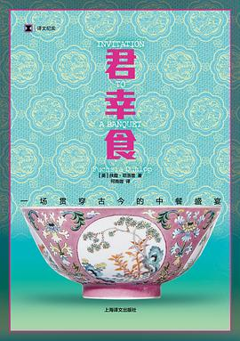

《君幸食 : 一场贯穿古今的中餐盛宴》

总体观点
中国饮食文化绝不仅是满足口腹之欲的烹饪技艺，而是一整套深邃完备的文明世界观：它将阴阳五行、医食同源、节俭惜物与文人审美融为一体。
西方美食界长期对中餐抱有‘廉价、油腻、神秘下水’的严重偏见，而中餐在火候掌控、复合味型调配以及对奇妙‘口感（口舌之感，Texture）’的追求上，早已达到世界料理之巅。
从田间谷物到宫廷盛宴，‘君幸食’（请君用膳）饱含着中国人对大地风土的感恩、对家族人情的温热关怀，以及在千年苦难岁月中生生不息的生活韧性。
核心观点 共 6 条
-
1. ‘口感（Texture）’是中国烹饪最令西方惊叹而又难以理解的隐秘维度
西方料理偏重纯粹的风味与嫩肉，而中国大师对爽脆、软糯、滑溜、弹牙、Q劲等微妙触感有着登峰造极的精细把控。
例 ·海参、鱼肚本身几乎毫无味道，全凭高汤煨透与胶原蛋白带来的丰腴滑糯口感，在懂行的老饕舌尖上引发至高愉悦。 -
2. 大火爆炒（Wok Hei，镬气）是中国厨房物性转化的化学魔法
在极短的几十秒内，圆底铁锅将数百度高温、油脂雾化与食材汁水瞬间锁住，发生美拉德反应，激发出任何西式平底锅无法企及的焦香灵魂。
例 ·一盘刚出锅的干炒牛河带着腾腾热气，豆芽依然清脆欲滴，牛肉嫩滑焦香而盘底绝不渗出一滴多余油水，此即镬气顶峰。 -
3. ‘食不厌精，脍不厌细’：中国厨刀是解构食材的精密手术刀
一把看似粗笨的中国菜刀，在名厨手中能切出极细的文思豆腐丝、腰花麦穗刀，通过改变食材物理表面积彻底改变味道附着。
例 ·淮扬菜大师在一块嫩豆腐上横切成百刀、纵切成百刀，投入清汤瞬间如一朵洁白的菊花在水中翩然绽放，薄如发丝。 -
4. 医食同源：每一顿中国饭都是一场微型的中医养生阴阳平衡实践
上火与降火、温补与清热，中国人不需要成为医生，只需在饭桌上搭配生姜配螃蟹、羊肉配白萝卜，便能本能调和身心节律。
例 ·大闸蟹性大寒，老江南人家必定以紫苏蒸之，佐以热气腾腾的生姜香醋和温热花雕酒驱寒，体现了刻入骨髓的平衡智慧。 -
5. 珍惜食材的极致艺术：西方弃之不顾的边角料在中餐里化腐朽为神奇
鸡爪、鸭掌、猪大肠与鱼头，在西方被视为野蛮下水，而在中餐里经过焯水、卤煮、爆炒，成为胜过纯瘦肉的无上珍馐。
例 ·四川泡椒凤爪以富含胶质的鸡爪搭配老坛泡菜水发酵，酸辣脆爽直击神经，成为全国男女老少难以抗拒的全民零食。 -
6. 圆桌合餐制寄托着中国人对于‘团圆美满’最深沉的人情纽带
西餐分餐制强调个人边界，中餐圆桌转盘则让全家人在一夹一让的分享互动中流淌温情，饭局是中国人社会关系的根本润滑剂。
例 ·除夕年夜饭全家老小围坐圆桌，长辈给晚辈夹上一筷红烧肉，在热气腾腾的推杯换盏中，一整年的疲惫与委屈瞬间烟消云散。
全书结构 6 部分
-
第一章 灶台与天地：中国烹饪的世界观与炉灶革命
回溯圆底铁锅与大火爆炒的诞生历史，探讨‘鼎食’礼器向家庭炒锅的演进，揭开‘镬气’背后的物理化学反应秘密。
例 ·扶霞走入广州老茶楼后厨，近距离观察粤菜师傅如何在数千度呼啸的猛火灶上颠锅抛炒，让火焰在锅内跳跃而不焦糊。 -
第二章 刀工与造化：淮扬文思与川味七滋八味
深度解析中国菜刀的百变技艺，对比淮扬菜以清淡见功力的极致刀功，与川菜二十四种复合味型调配的调味宇宙。
例 ·记录在扬州迎宾馆拜师学切文思豆腐的艰难试炼，以及在成都后厨解析‘鱼香味’如何在毫无鱼肉情况下凭葱姜蒜糖醋豆瓣凭空造香。 -
第三章 奇妙的口感：海参、燕窝与被西方误解的筋道骨髓
正面迎击西方人对中餐黏滑、骨肉相连口感的文化偏见，系统论述‘脆、嫩、糯、滑’是中国饮食登峰造极的美学飞跃。
例 ·详述鲁菜大师葱烧海参的精妙：如何用浓郁的章丘大葱金黄葱油，赋予滑润无味的海参以灵魂般的醇厚回甘。 -
第四章 山野风土与百草为食：医食同源与野菜清欢
考察中国人对春笋、莼菜、野生菌子等时令风物的极致敏锐，剖析本草纲目与日常家常饮食中无处不在的食疗养生辩证法。
例 ·跟随云南村民雨季清晨采摘见手青与鸡枞菌，目睹厨师如何用大量猪油大蒜严密炒制以解微毒，换取山野直击灵魂的极致鲜美。 -
第五章 盛宴之礼：圆桌转盘、茶肆酒楼与人情政治
全景考察从《韩熙载夜宴图》到现代国宴的宴饮社交礼仪，解析座次尊卑、敬酒艺术，以及圆桌合餐如何凝聚中国家族认同。
例 ·生动描写一场典型的中国商业饭局：主宾如何在推杯换盏、你敬我让的潜规则交流中完成数百万元合同的默契拍板。 -
第六章 走向世界的中餐：从唐人街廉价外卖到米其林星级殿堂
反思中餐在欧美近百年的移民苦难与‘左宗棠鸡’式粗俗化误读，记录当代中国新派主厨如何自信地用现代审美重新征服全球味蕾。
例 ·探访伦敦与上海米其林三星中餐厅，展现顶级主厨如何用顶级松茸与传统吊清汤技法，让欧美严苛食评家由衷折服赞叹。